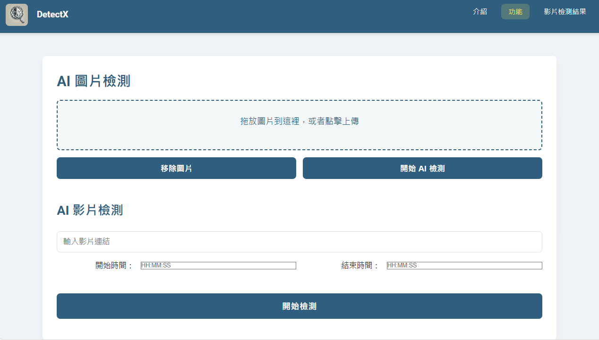
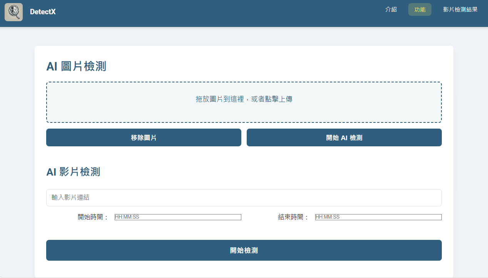
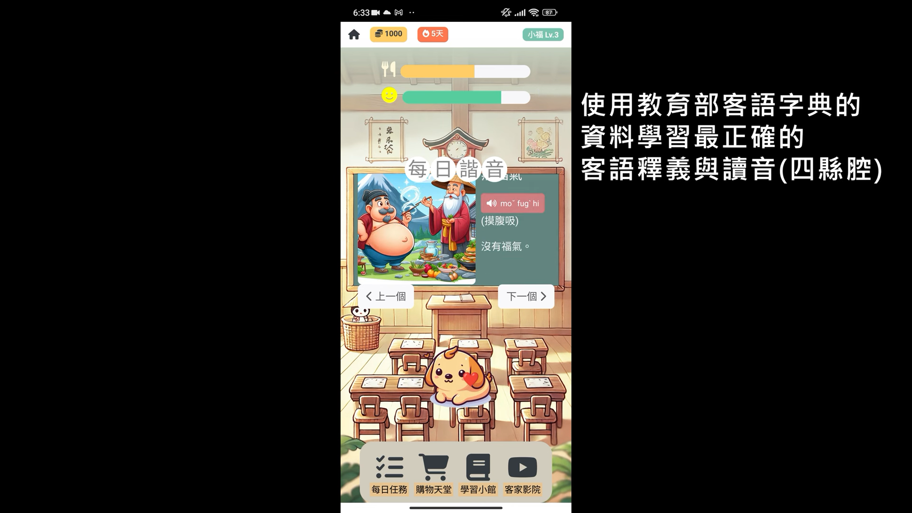

DetectX
AI 圖像/影片檢測器，2024梅竹黑克松作品
 More DetailsSardelka — Web Dev & Infra Enthusiast
我是李宥寬，又稱趙何廷、Sardelka、SeePeePee、Richard Matthew，目前就讀於國立中央大學資訊管理學系，對於網頁開發、雲端架構、資訊安全及嵌入式系統等領域有著濃厚興趣。
維護管院電腦設備及網路系統，協助教職員工及學生解決電腦問題。
住服組網站維護，協助各區傳達室作業，診斷及排除網路問題
教發中心自主社群，於教研大樓中心地下室設有機房，提供並維護新知網、學生會、登山社等校內網站之伺服器.
多益聽讀 970分
2024梅竹黑客松 中華電信組第二名
2024有AI哈客松創點子大賽 技術實作組第二名
2024資安金盾獎 嶄露頭角獎
System administration, shell scripting, and server management
Cloud architecture, DevOps, and infrastructure automation
HTML, CSS, JavaScript, and modern web frameworks
Reverse engineering, vulnerability assessment, and secure coding
Web APIs, MVC applications, and microservices
Scripting, data analysis, and automation
Cross-platform mobile app development
.NET development and enterprise applications
AI 圖像/影片檢測器，2024梅竹黑克松作品
 More Details諧音梗客語學習APP，2024「有AI哈客松 創點子大賽」作品
 More DetailsHighschool project. Multiplayer mod for GTAV, currently in maintenance mode
 More Details
More Details